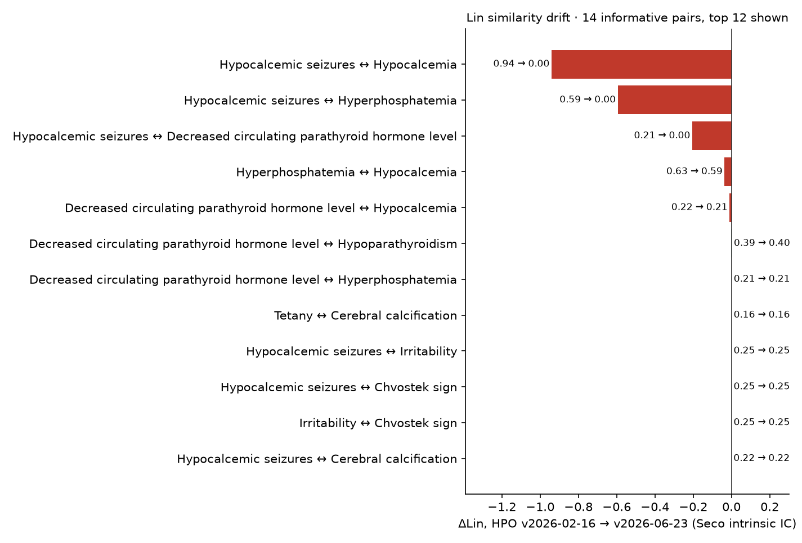
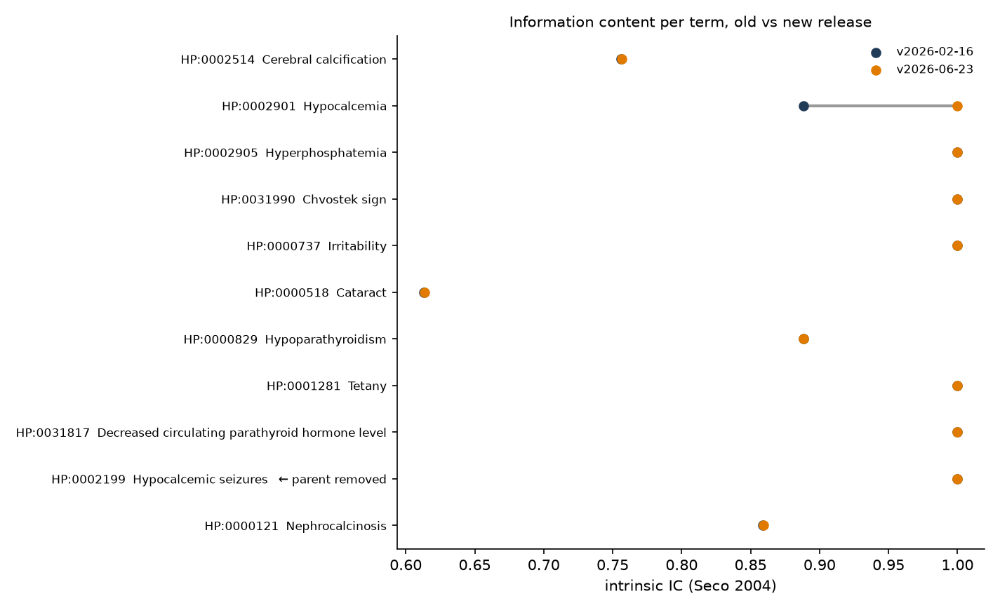
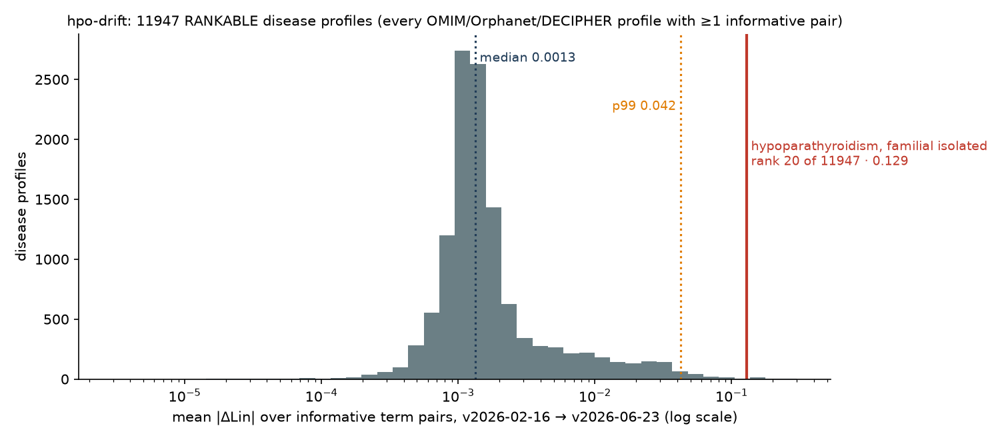

hpo-drift


What did a new HPO release change for your phenotype terms — and by how much did your similarity scores move?
The Human Phenotype Ontology is updated regularly. Terms get renamed, obsoleted and merged — and, the part nobody notices, the hierarchy gets new edges. New edges change information content, and information content is what Resnik and Lin similarity are made of. So the same HPO term set can yield different semantic-similarity values across releases, even if none of your terms were touched — and, through Best Match Average scoring, a different position of a disease in a patient's differential-diagnosis list. hpo-drift shows you exactly that, for the term list you actually use, in about three seconds.
The headline result
Same patient. Same disease annotations. Different HPO release. Does the diagnosis move?
examples/sweep_synthetic_patients.py, protocol declared before running: 500 synthetic patients, each a random 60 % of one disease's phenotype.hpoa terms (at least 3) plus 2 random noise terms, drawn with seed 0 from all 12 935 disease profiles, no size filter. Each patient is scored (symmetric Best Match Average of Lin, Seco intrinsic IC) against every disease profile in HPO v2026-02-16 and in v2026-06-23.
| endpoint | Noise-A: 2 random terms from the whole domain | Noise-B: 2 terms from neighbouring branches |
|---|---|---|
| true diagnosis changed rank | 1 / 500 (rank 4 → 5, cone-rod dystrophy 12) | 0 / 500 |
| top-1 disease changed | 0 / 500 | 0 / 500 |
| top-5 membership changed | 50 / 500 (10 %) | 43 / 500 (8.6 %) |
| true diagnosis at rank 1 | 486 → 486; within top 10: 498 → 498 | 485 → 485; within top 10: 500 → 500 |
| Spearman ρ of all 12 935 disease ranks | median 0.9997, min 0.973 | median 0.9998, min 0.894 |
So in both stress tests the diagnostic ranking was robust to the release change, while the raw numbers underneath it were not: every one of the 11 947 rankable disease profiles had at least one pairwise Lin score move (hpo-drift cohort, below), and a single removed is_a edge can take a pair from 0.94 to 0.00 (the familial-isolated-hypoparathyroidism example, below). The 10 % of patients whose top-5 list was reshuffled show where that raw drift does reach a result: not the first place, but the order of the differential just below it.
Full per-patient tables (kept terms, noise terms, ranks and scores in both releases): Noise-A, Noise-B; summarise with python examples/summarize_sweep.py <csv>. Caveat stated once: a patient built from 60 % of the true disease's own annotations is an easy query (rank 1 in 97 % of cases), so this test bounds the effect for well-annotated presentations; sparser or noisier patients are one flag away (--keep, --noise, --noise-mode).
Where the raw drift comes from: one edge, one profile
Familial isolated hypoparathyroidism (OMIM:146200), 11 phenotypic-abnormality terms from phenotype.hpoa (examples/fih_omim146200_terms.txt):

- One term lost one parent. Hypocalcemic seizures (
HP:0002199) wasis_aHypocalcemia (HP:0002901) andis_aSymptomatic seizures; in v2026-06-23 the Hypocalcemia edge is gone (likewise under Hypocalcemic tetany). No label changed, nothing was obsoleted, the other 10 terms were not touched. - Consequence: Hypocalcemic seizures ↔ Hypocalcemia went 0.94 → 0.00 — their most-informative common ancestor is now the root; ↔ Hyperphosphatemia 0.59 → 0.00. Hypocalcemia lost its last child and became a leaf (IC 0.888 → 1.000). All 14 informative pairs in the profile moved, 3 by more than 0.1; 41 pairs share only the root (ROOT_ONLY, 0 → 0).
- Whether the edit is right is an ontology-design question (a seizure caused by hypocalcemia is arguably not a kind of hypocalcemia). What
hpo-driftshows is the size of its numerical footprint: this profile is 20th of 11 947 by mean |ΔLin| in the full cohort, and the same edit drives four of the top five.

What to do with this: pin the release tag in Methods, match on IDs, and report how much your numbers depend on the release — hpo-drift report gives the sentence, hpo-drift rank-diseases tells you whether it reached your ranking.

| rank | disease profile | retained terms | informative pairs | changed | mean |ΔLin| |
|---|---|---|---|---|---|
| 1 | Hypoparathyroidism, familial isolated 2 (OMIM:618883) | 4 | 6 | 6 | 0.298 |
| 2 | Deafness, autosomal recessive 37 (OMIM:607821) | 4 | 2 | 2 | 0.257 |
| 3 | Cortisone reductase deficiency 2 (OMIM:614662) | 7 | 4 | 4 | 0.243 |
| 4 | Familial isolated hypoparathyroidism due to agenesis of parathyroid gland (ORPHA:2239) | 8 | 12 | 12 | 0.214 |
| 5 | Pseudohypoparathyroidism type 2 (ORPHA:94090) | 12 | 20 | 20 | 0.209 |
| 6 | Cone-Rod dystrophy, X-linked, 2 (OMIM:300085) | 2 | 1 | 1 | 0.207 |
| 7 | Immunodeficiency 65, susceptibility to viral infections (OMIM:618648) | 5 | 6 | 6 | 0.175 |
| 8 | ACTH-independent macronodular adrenal hyperplasia 2 (OMIM:615954) | 12 | 8 | 8 | 0.172 |
| … | |||||
| 20 | Hypoparathyroidism, familial isolated (OMIM:146200) | 11 | 14 | 14 | 0.129 |
| 50 | Chronic granulomatous disease (ORPHA:379) | 22 | 95 | 95 | 0.067 |
| median of 11 947 | 0.0013 |
Reproduce (the annotation file is pinned: phenotype.hpoa from HPO release v2026-06-23, #version: 2026-06-23, SHA-256 89004f85b253f980ffe84218d2c080665cbf67a57bbb322111d6a2db5eb31dff; the script prints the version and hash of the file it was given):
curl -LO https://github.com/obophenotype/human-phenotype-ontology/releases/download/v2026-06-23/phenotype.hpoa
hpo-drift cohort --hpoa phenotype.hpoa --old v2026-02-16 --new v2026-06-23 --out all_profiles.csv # every profile, ~30 s
hpo-drift rank all_profiles.csv --metric mean_abs_dlin > ranked.csv # optional
examples/cohort-v2026-02-16_v2026-06-23.csv (all 12 935 profiles with status, plus a .meta.json recording the annotation file's version and hash) and examples/ranked-v2026-02-16_v2026-06-23.csv. Where familiar syndromes sit: X-linked agammaglobulinemia 0.033, autosomal dominant hyper-IgE syndrome 0.029, cystic fibrosis 0.023, Wiskott–Aldrich 0.020, Kabuki / Noonan / Marfan about 0.001.
30-second start
pip install hpo-drift
# one term per line — HP IDs (recommended) or labels
hpo-drift report --old v2026-02-16 --new v2026-06-23 --terms examples/fih_omim146200_terms.txt
IC: Seco 2004 intrinsic, on the is_a graph under root HP:0000118 (Phenotypic abnormality); N = 18690 → 19120
active terms: 19389 → 19836 (added 469, obsoleted 22, renamed 266)
is_a edges: +886 / −185
term label status parents IC old → new
HP:0002199 Hypocalcemic seizures unchanged −HP:0002901 1.000 → 1.000
HP:0002901 Hypocalcemia unchanged = 0.888 → 1.000
…
pair Lin old → new Δ MICA
Hypocalcemic seizures ↔ Hypocalcemia 0.941 → 0.000 −0.941 HP:0002901 → HP:0000118
Hypocalcemic seizures ↔ Hyperphosphatemia 0.594 → 0.000 −0.594 HP:0003111 → HP:0000118
…
--json for a machine-readable report. Releases are pulled from the official GitHub assets of obophenotype/human-phenotype-ontology; any tag like v2026-06-23 works and is cached under ~/.cache/hpo-drift.
Five things it does
1 · report — the drift itself
Per term: status (unchanged / renamed / obsoleted → replacement / merged / missing), label change, parents added or removed, IC before and after. Per pair: Resnik and Lin in both releases, the delta, and the most-informative common ancestor — so you can see why a pair moved. Plus the ontology-wide counts.
2 · lint — hygiene for a term list
hpo-drift lint --release v2026-06-23 --terms my_terms.txt
⚠️ Arthritis: matched by LABEL — labels get renamed; store the ID → HP:0001369
❌ Recurrent infection: label not found (exact match on names/synonyms; the term is 'Recurrent infections')
❌ HP:0002961: OBSOLETE term → replaced_by HP:0010701
3 · cohort and rank — the whole annotation corpus, no cutoffs
hpo-drift cohort --hpoa phenotype.hpoa --old v2026-02-16 --new v2026-06-23 --out all_profiles.csv
hpo-drift rank all_profiles.csv --metric mean_abs_dlin --top 20
cohort computes the drift summary for every disease with at least one positive phenotypic-abnormality annotation in phenotype.hpoa — a profile is the unique HP ids of a disease's rows with aspect P and no NOT qualifier (in v2026-06-23: 12 956 disease ids in the file, 12 935 profiles, 21 ids have only negated or non-P rows; the sidecar .meta.json records both counts). There is no minimum or maximum size: a profile that cannot support pairwise analysis stays in the table with a status — NO_USABLE_TERMS, TERM_ONLY (IC drift only), NO_INFORMATIVE_PAIRS (every pair shares only the root) or RANKABLE. Columns: a mutually exclusive disposition of every raw term (retained, unknown, new_only, missing_new, merged_or_alt, obsolete, out_of_domain — they add up to n_raw_terms), IC changes, pairs split into informative and root-only, pairs changed and pairs moved by > 0.01 / > 0.1, mean and max |ΔLin|. rank is a separate, optional step over that complete table. report follows the same rules for any list you give it: 0, 1 or N terms, root-only pairs marked ROOT_ONLY, terms outside the root marked OUT_OF_DOMAIN with a pointer to --root. IDs and labels are resolved against both releases: a term that exists only in the new release is reported as new-in-new (not silently dropped), a label the two releases map to different ids as ambiguous, an unresolvable token as unknown.
Provenance. Every hp.obo is downloaded atomically, hashed, checked against the SHA-256 the official HPO GitHub release publishes for the asset, and cached only after that check; reports, JSON and cohort sidecars record the SHA-256 of both ontology inputs and of the annotation file.
4 · profiles and rank-diseases — the question a genomicist actually asks
hpo-drift profiles --query patient.txt --target disease.txt --old v2026-02-16 --new v2026-06-23
hpo-drift rank-diseases --query patient.txt --hpoa phenotype.hpoa --old v2026-02-16 --new v2026-06-23 --out ranks.csv
rank-diseases scores the query against every disease profile in phenotype.hpoa in each release and reports rank and score per disease, so you can see whether a differential-diagnosis list is stable across the release change. examples/sweep_synthetic_patients.py runs the clinical version of this question on synthetic patients: a random 60 % subset of a disease’s annotations plus 2 noise terms, scored against every disease in both releases; it records the rank of the true diagnosis in each release, top-1 changes, top-5 overlap and Spearman ρ.
5 · a monthly GitHub Action
.github/workflows/drift.yml fetches the latest release, compares it with your pinned one (PINNED_HPO) and uploads the report. Add a threshold on lin_delta from the JSON and it becomes a failing check.
How it works
flowchart LR
A["release tag<br/>v2026-02-16"] -->|hp.obo| C[parse: terms · is_a · alt_id · obsolete]
B["release tag<br/>v2026-06-23"] -->|hp.obo| C
C --> D["intrinsic IC<br/>Seco 2004"]
T[your term list] --> E[resolve IDs / labels]
E --> F[per-term status · parents · IC Δ]
D --> G[Resnik / Lin per pair · MICA · Δ]
F --> R[report · JSON · lint]
G --> R
IC is intrinsic (Seco et al. 2004: 1 − log(descendants+1)/log(N)), computed on the is_a graph only, with N and descendant counts taken inside the closure of a root — HP:0000118 Phenotypic abnormality by default (--root to change; inheritance, frequency and modifier branches are excluded, and the root's IC is exactly 0). Every report states the method, the root and N. Because this IC depends only on the graph, the drift measured here is caused purely by ontology edits, which is the effect this tool isolates. Annotation-based IC (from phenotype.hpoa) adds a second, independent source of drift and is the next option on the roadmap — then the two can be shown side by side.
Companion tools
hpotools— HPO in R: release-pinned loading, similarity, Phenomizer-style ranking, enrichment.awesome-human-phenotype-ontology— link-verified list of HPO tools.
Roadmap
--ic annotations · fuzzy label suggestions in lint · Phenopackets v2 export · --pairs file for patient × disease scoring · JOSS paper.
Cite
DOI (all versions): 10.5281/zenodo.22286170 — each release has its own version DOI on that Zenodo page; cite the version you ran (hpo-drift --version).
Soloshenko M. hpo-drift: quantifying the effect of HPO release changes on phenotype-similarity results. 2026. MIT License.